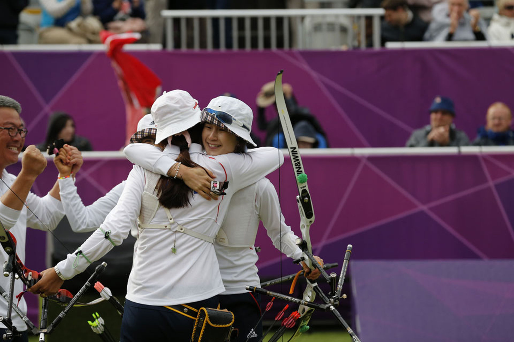

ARCHERY, ONE OF THE OLDEST SPORTS STILL PRACTICED, IS CLOSELY LINKED TO THE DEVELOPMENT OF CIVILISATION. AS A CULTURAL ADVANCE, IT WAS COMPARABLE TO THE DISCOVERY OF FIRE AND THE INVENTION OF THE WHEEL.
ARCHERY IN BATTLE
In 1200 BC the Hittites and Assyrians shot their bows from chariots, becoming fearsome opponents in battle. They made their bows with tendon, horn and wood and also developed a new re-curved shape. This made their bows shorter and more powerful, making them easier to handle for an archer on horseback.
A NOBLE HISTORY
Archery was the favourite sport of the Egyptian pharaohs during the 18th dynasty (1567-1320 BC). Many centuries later, some of the earliest recorded archery tournaments took place during the Zhou (Chou) dynasty (1027- 256 BC) in China. Such events were attended by Chinese nobility. Much later, English writers honoured the longbow for famous contributions to their country’s victories in the battles of Crécy, Agincourt a